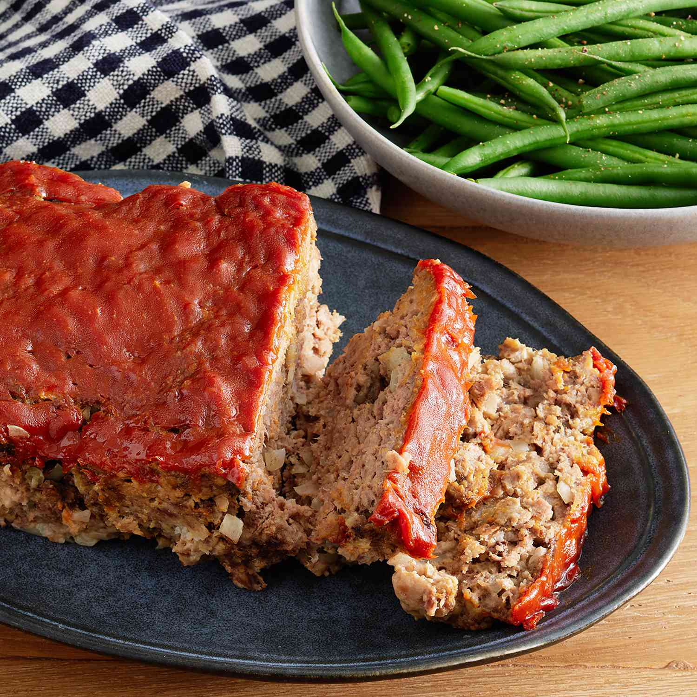

Easy Meatloaf

Description
Quick and simple meatloaf.
Ingredients
- Ground Beef
- One Egg
- One Onion
- Milk
- Breadcrumbs
- Salt and Pepper
Directions
- Mix the loaf ingredients, then transfer to a loaf pan.
- Mix the sauce ingredients, then pour over the loaf.
- Bake in the preheated oven until the meatloaf is no longer pink in the center.
- In an oven preheated to 350 degrees F, this classic meatloaf should be fully cooked in about one hour. You'll know it's done when the meat is no longer pink in the center.